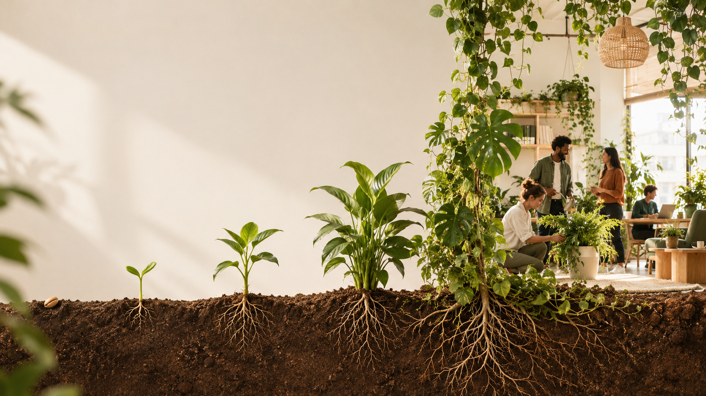

QVT · RSE · Vivant en entreprise
Nous ne végétalisons pas les bureaux. Nous cultivons des entreprises plus vivantes.
Chez Cool As Cucumber, chaque pot posé est le début d'une transformation progressive et durable de vos espaces de travail, portée par une méthode rigoureuse et participative.
Une équipe en atelier de plantation
Le vivant ne s'installe pas.
Il se cultive.
Nous aidons les entreprises à améliorer durablement la qualité de vie au travail en faisant entrer le vivant dans leurs espaces, à travers une démarche participative.
Les plantes ont des bénéfices reconnus sur le bien-être, la perception des espaces et le stress — mais cet impact est décuplé lorsqu'elles deviennent un projet collectif.
Notre rôle n'est donc pas d'installer des plantes. Notre rôle est de créer une dynamique durable autour du vivant.
Un bien-être
durable
Une dynamique
collective
Des espaces
plus vivants
Ce que nous faisons
Une démarche construite avec vos équipes, pas pour elles
Nous accompagnons la création d'espaces de travail plus vivants en impliquant les collaborateurs à chaque étape du projet.
Ils choisissent les aménagements et les espèces plantées.
Ils réalisent eux-mêmes une partie des installations.
Ils apprennent à prendre soin des plantes au quotidien.
Ils deviennent progressivement autonomes.
Ils développent une véritable communauté autour du vivant.
Le végétal devient alors un support pour améliorer la QVT, renforcer le sentiment d'appartenance, créer des échanges entre collaborateurs, et rendre la démarche RSE concrète au quotidien.

Ce qui nous différencie
vendent des plantes.
vendons une transformation progressive.
Nous ne croyons pas aux actions ponctuelles. Nous croyons aux projets qui prennent le temps de s'enraciner. Comme une culture d'entreprise, le vivant ne pousse pas en un jour.
Notre objectif est simple : que deux ans après notre passage, le projet soit encore vivant.
Ce que le vivant change, concrètement
Améliorer la QVT
Grâce aux bénéfices reconnus du végétal et à des espaces de travail plus agréables à vivre.
Créer du collectif
Grâce à une démarche participative qui implique réellement les salariés, du choix à l'entretien.
Faire vivre la RSE
Grâce à des pratiques concrètes : bouturage, compost, transmission des savoirs, récupération d'eau.
La méthode
Cinq étapes, dans l'ordre
Observer
Comprendre les usages, les attentes et le potentiel des espaces.
Co-construire
Imaginer le projet avec les collaborateurs, pas pour eux.
Planter
Créer ensemble les premiers espaces végétalisés, lors d'un chantier participatif.
Faire vivre
Former les équipes, animer la communauté, transmettre les gestes qui durent.
Faire grandir
Accompagner l'entreprise dans son parcours de maturité, sur la durée.
Le parcours
L'entreprise évolue progressivement
Chaque étape apporte de nouveaux usages et une implication plus forte des collaborateurs.
Premiers espaces plantés, premières habitudes.
Les équipes s'approprient les gestes d'entretien.
Une communauté du vivant se forme durablement.
Le vivant infuse la culture d'entreprise, en autonomie.
- 🌱 Graine
Premiers espaces plantés, premières habitudes.
- 🌿 Jeune pousse
Les équipes s'approprient les gestes d'entretien.
- 🌳 Arbre
Une communauté du vivant se forme durablement.
- ♻️ Écosystème
Le vivant infuse la culture d'entreprise, en autonomie.
L'objectif n'est jamais d'avoir plus de plantes. L'objectif est d'avoir davantage de vivant.
Prêt à faire pousser votre QVT ?
Parlons de vos espaces, de vos équipes, et de la première graine à planter ensemble.